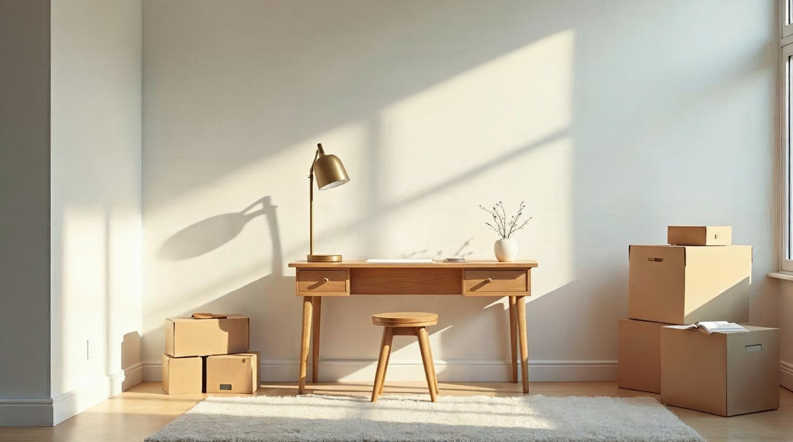
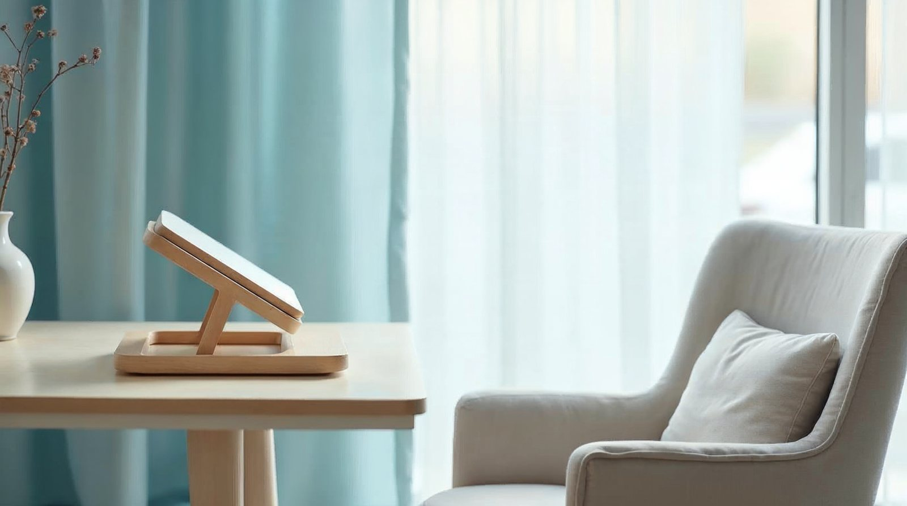
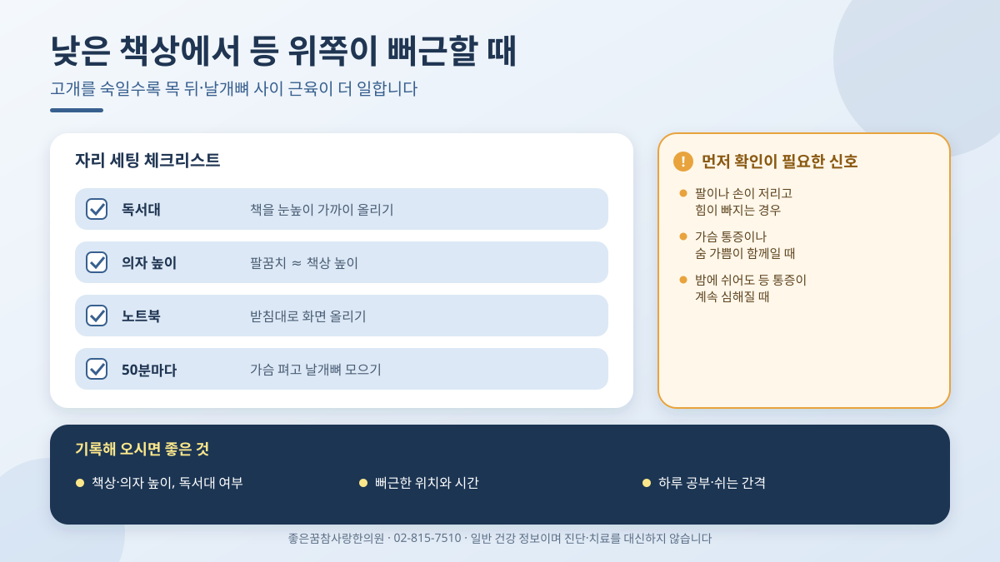

이종호 한의사 감수좋은꿈참사랑한의원 대표원장 (한의사 면허번호 19769)발행 2026-11-24 · 수정 2026-11-26
이 글의 차례
- 왜 이런 불편이 생길 수 있나요
- 왜 날개뼈 사이가 유독 뻐근할까요?
- 뻐근함은 어떤 모습으로 나타나나요?
- 비슷해 보이지만 따로 살펴야 하는 경우
- 상황별 예시
- 스스로 점검해 보세요
- 먼저 이렇게 여쭙니다
- 일상에서 먼저 해 볼 수 있는 것
- 자리에 앉으면 이 순서로 맞춰 보세요
- 스터디카페 자리는 이렇게 골라 보세요
- 50분마다 해 볼 1분 동작
- 쉬는 시간의 휴대폰도 함께 살펴보세요
- 시험 기간에는 왜 더 뻐근할까요?
- 몇 주에 걸쳐 이렇게 바꿔 갑니다
- 공부를 마친 뒤에는 이렇게 풀어 주세요
- 한의학에서는 어떻게 보나요?
- 한의원에서 함께 살필 수 있는 경우
- 첫 진료는 이렇게 진행됩니다
- 이렇게 기록해 오시면 상담이 쉬워집니다
- 이런 증상은 먼저 확인이 필요합니다
독서대로 책을 눈높이 가까이 올리고 의자 높이를 맞추는 것만으로도 날개뼈 사이 뻐근함을 덜 수 있습니다. 스터디카페와 독서실 책상은 자리마다 높이가 달라, 책을 내려다보며 몇 시간씩 공부하다 보면 날개뼈 사이가 타는 듯 뻐근하다는 수험생이 많습니다.
진료실에서 날개뼈 안쪽을 손으로 짚어 드리면 "바로 거기예요" 하시는 분이 정말 많습니다. 손이 잘 닿지 않는 곳이라 혼자 풀기도 어렵고, 참고 공부하다 보면 어느새 목과 머리까지 무거워집니다. 오늘은 자리에서 바로 해 볼 수 있는 것부터 차근차근 정리해 보겠습니다.
왜 이런 불편이 생길 수 있나요
- 고개를 숙일수록 머리 무게를 버티느라 목 뒤와 등 위쪽 근육이 더 많이 일하게 됩니다.
- 책상이 낮으면 어깨가 앞으로 말리고 등이 굽어 날개뼈 사이가 늘어난 채로 긴장하기 쉽습니다.
- 오래 같은 자세로 있으면 근육이 굳어 타는 듯한 뻐근함으로 느껴지기도 합니다.
- 노트북 화면이 낮으면 고개 숙임이 더 깊어질 수 있습니다.
- 의자가 높고 책상이 낮으면 팔꿈치를 책상에 기대느라 한쪽 어깨가 올라가 좌우 균형이 흐트러지기도 합니다.
왜 날개뼈 사이가 유독 뻐근할까요?
고개를 앞으로 숙이면 머리가 몸의 중심보다 앞으로 나가고, 그 무게를 뒤에서 붙잡는 일을 목 뒤와 날개뼈 사이 근육이 맡습니다. 고개를 많이 숙일수록 이 근육들이 버텨야 하는 힘은 훨씬 커진다고 알려져 있습니다.
게다가 어깨가 앞으로 말리면 날개뼈가 바깥으로 벌어지며 그 사이 근육은 늘어난 채로 계속 힘을 줍니다. 늘어난 채 버티는 근육은 쉽게 지치고 혈액순환도 더뎌져, 타는 듯하거나 찌릿한 뻐근함으로 느껴지기 쉽습니다.
여기에 팔을 앞으로 뻗어 필기하거나 마우스를 쓰는 동작이 더해지면 어깨가 더 앞으로 끌려갑니다. 그래서 공부 시간이 길수록, 필기가 많은 날일수록 날개뼈 사이가 먼저 신호를 보냅니다.
뻐근함은 어떤 모습으로 나타나나요?
같은 등 위쪽 불편이라도 모습에 따라 살필 방향이 조금씩 달라집니다. 어디에 가까운지 떠올려 보세요.
- 날개뼈 안쪽이 타는 듯 뻐근하고, 공부 시간이 길어질수록 심해지는 경우
- 목 뒤부터 어깨까지 돌처럼 굳고 고개를 돌리기 뻑뻑한 경우
- 한쪽 날개뼈만 유독 결리고 숨을 크게 쉴 때 당기는 경우
- 뻐근함과 함께 뒷머리가 무겁고 눈이 피로한 경우
- 팔이나 손끝까지 저린 느낌이 함께 내려가는 경우
마지막처럼 저림이 함께 있다면 근육 문제만이 아닐 수 있어 더 자세히 살핍니다.
비슷해 보이지만 따로 살펴야 하는 경우
등 위쪽 뻐근함은 대부분 자세와 근육 긴장에서 오지만, 비슷하게 느껴지는 다른 불편도 있습니다.
- 팔과 손이 저리고 힘이 빠진다면 목에서 팔로 가는 신경이 눌렸을 가능성도 함께 봅니다.
- 자세와 상관없이 등이 아프고 열이나 기침이 함께 있다면 다른 원인을 먼저 확인합니다.
- 걷거나 계단을 오를 때 등과 가슴이 함께 조인다면 병원 확인이 먼저입니다.
또 넘어지거나 부딪힌 뒤에 생긴 통증이라면 자세보다 다친 부위를 먼저 확인합니다.
이런 경우가 아니라 공부 시간과 함께 심해지고 쉬면 덜해진다면, 앉는 자세와 자리 세팅을 먼저 바꿔 볼 수 있습니다.
상황별 예시
- 예를 들어 매일 다른 자리를 고르는 스터디카페에서 그날따라 책상이 낮은 자리에 앉은 경우, 오후 서너 시쯤 날개뼈 사이가 타는 듯해질 수 있습니다. 앉자마자 의자 높이부터 맞추고 접이식 독서대를 펴는 것만으로도 차이가 납니다.
- 예를 들어 인강을 노트북으로 들으며 화면을 내려다보는 경우, 고개 숙임이 몇 시간씩 이어집니다. 노트북 받침대나 두꺼운 책 몇 권으로 화면을 눈높이 가까이 올려 보세요.
- 예를 들어 필기를 많이 하는 과목을 공부하며 책상에 바짝 엎드리는 경우, 등이 둥글게 말리고 오른쪽 어깨만 올라가기 쉽습니다. 의자를 책상 쪽으로 당겨 앉고 노트를 조금 비스듬히 두면 몸을 덜 숙여도 됩니다.
스스로 점검해 보세요
- 공부할 때 턱이 가슴 쪽으로 내려가 있다
- 책상 높이가 팔꿈치보다 많이 낮다
- 노트북 화면 윗부분이 눈높이보다 아래에 있다
- 한 번 앉으면 두 시간 넘게 일어나지 않는다
- 날개뼈 사이를 손으로 누르면 아프고 단단하다
- 공부 시간이 길어질수록 뒷머리가 무거워진다
특히 책상 높이와 화면 높이 두 가지가 함께 맞지 않으면 고개 숙임이 깊어집니다. 이 둘은 물건 하나로 바로 바꿀 수 있는 부분이라 가장 먼저 손보시기를 권합니다.
세 가지 이상 해당된다면 자리 세팅부터 바꿔 보세요. 바꿔도 뻐근함이 몇 주째 이어진다면 진료 때 이 목록을 함께 보며 이야기를 나누면 좋습니다.

먼저 이렇게 여쭙니다
- 책을 볼 때 고개를 얼마나 숙이나요?
- 의자와 책상 높이가 몸에 맞나요?
- 날개뼈 사이와 목 뒤 중 어디가 더 뻐근한가요?
- 팔이나 손이 저린 느낌이 있나요?
- 하루 공부 시간과 한 번에 앉아 있는 시간은 얼마나 되나요?
- 잘 때 베개 높이와 자는 자세는 어떤가요?
잠자는 자세까지 여쭙는 것은 낮에 굳은 근육이 밤에 쉬어야 하는데, 베개가 너무 높거나 엎드려 자면 등 위쪽이 밤에도 긴장한 채로 있기 때문입니다.

일상에서 먼저 해 볼 수 있는 것
- 독서대를 써서 책을 눈높이 가까이 올리기
- 의자 높이를 맞춰 팔꿈치가 책상과 비슷한 높이가 되게 하기
- 50분마다 가슴을 펴고 날개뼈를 모으는 동작 하기
- 노트북은 받침대로 화면 높이기
- 엉덩이를 의자 깊숙이 넣고 허리 뒤에 얇은 쿠션을 대기
- 무거운 가방은 한쪽 어깨에 메지 말고 양쪽으로 나눠 메기
- 두꺼운 수험서는 사물함에 두고 그날 볼 책만 들고 다니기
자리에 앉으면 이 순서로 맞춰 보세요
스터디카페는 자리가 매번 바뀌어 처음 1분이 중요합니다. 앉자마자 아래 순서로 맞추는 습관을 들이면 자리마다 달라지는 높이 차이를 줄일 수 있습니다.
- 의자 높이: 발바닥이 바닥에 편하게 닿고 무릎이 엉덩이와 비슷한 높이가 되게
- 의자와 책상 거리: 의자를 당겨 앉아 몸을 앞으로 숙이지 않아도 책에 손이 닿게
- 책 높이: 독서대를 펴서 눈을 살짝 내려다보는 정도로
- 화면 높이: 노트북이나 태블릿은 화면 윗부분이 눈높이 가까이 오게
- 팔 위치: 어깨에 힘을 빼고 팔꿈치가 몸 옆에 편히 놓이게
의자가 너무 낮아 높이를 맞출 수 없다면 얇은 방석을 하나 깔아 보세요. 접이식 독서대와 방석 하나만 들고 다녀도 자리 운에 덜 휘둘립니다.
스터디카페 자리는 이렇게 골라 보세요
자리를 고를 수 있다면 몇 가지만 기준으로 삼아도 등의 부담이 꽤 달라집니다. 매번 같은 자리를 쓸 수 없더라도 고르는 기준을 정해 두면 도움이 됩니다.
- 높이 조절이 되는 의자가 있는 자리를 먼저 고르기
- 칸막이가 너무 낮아 몸을 웅크리게 되는 자리는 피하기
- 냉난방 바람이 목과 어깨로 바로 오는 자리는 피하기
- 조명이 어두워 책에 얼굴을 가까이 대게 되는 자리는 피하기
- 일어나 움직이기 편하도록 통로 쪽 자리 고르기
찬 바람을 오래 맞으면 목과 어깨가 더 움츠러들어 뻐근함이 심해지기 쉽습니다. 바람을 피할 수 없다면 얇은 목도리나 겉옷으로 목과 어깨를 덮어 주세요.
50분마다 해 볼 1분 동작
오래 앉아 있는 것 자체보다 같은 자세로 오래 있는 것이 부담이 됩니다. 쉬는 시간마다 1분만 투자해 보세요.
- 의자에 앉은 채 양손을 깍지 껴 머리 뒤에 대고 팔꿈치를 뒤로 벌리며 가슴 펴기
- 양쪽 날개뼈를 등 가운데로 모았다가 천천히 풀기를 열 번
- 턱을 살짝 당겨 뒤통수를 뒤로 미는 느낌으로 5초씩 버티기
- 일어나 문틀이나 벽에 양팔을 대고 가슴을 앞으로 내밀어 늘이기
- 어깨를 귀 쪽으로 올렸다가 툭 떨어뜨리기
휴대폰 알람을 50분에 맞춰 두면 잊지 않고 챙기기 쉽습니다. 동작은 아프지 않은 범위에서 천천히 하고, 하다가 저림이나 통증이 심해지면 멈춰 주세요. 주변 사람이 신경 쓰인다면 앉은 채 할 수 있는 날개뼈 모으기만 해도 충분합니다.
쉬는 시간의 휴대폰도 함께 살펴보세요
50분 공부하고 쉬는 10분 동안 휴대폰을 무릎 위에 두고 내려다보면, 고개 숙인 자세가 쉬는 시간에도 그대로 이어집니다. 등 위쪽 근육 입장에서는 쉬는 시간이 없는 셈입니다.
- 쉬는 시간에는 휴대폰을 내려놓고 일어나 창밖이나 먼 곳 보기
- 휴대폰을 볼 때는 팔을 들어 화면을 눈높이 가까이 올리기
- 단체 대화방이나 영상은 쉬는 시간 가운데 일부만 쓰고 나머지는 걷기
쉬는 시간에 일어나 물을 뜨러 가거나 화장실에 다녀오는 것만으로도 등이 펴지는 시간이 생깁니다.
시험 기간에는 왜 더 뻐근할까요?
시험이 가까워지면 같은 자리, 같은 시간을 공부해도 날개뼈 사이가 더 뭉친다는 분이 많습니다. 긴장하면 어깨가 저도 모르게 귀 쪽으로 올라가고 숨이 얕아져, 등 위쪽 근육이 쉬지 못하고 계속 힘을 주기 때문입니다.
공부하다가 한 번씩 어깨가 올라가 있는지 확인하고, 숨을 길게 내쉬며 어깨를 툭 내려놓아 보세요. 모의고사를 마친 날에는 따뜻한 샤워와 이른 잠자리로 등이 쉬는 시간을 만들어 주는 것도 좋습니다.
몇 주에 걸쳐 이렇게 바꿔 갑니다
한꺼번에 모든 것을 바꾸기보다 한 주에 하나씩 습관을 더해 보세요.
- 첫 주: 앉자마자 의자 높이와 독서대 맞추기
- 둘째 주: 50분마다 1분 동작 하기
- 셋째 주: 쉬는 시간 휴대폰 대신 일어나 걷기
- 넷째 주: 잠들기 전 수건 스트레칭과 베개 높이 점검
공부를 마친 뒤에는 이렇게 풀어 주세요
하루 공부를 마치고 돌아가면 바로 누워 휴대폰을 보기 쉬운데, 그러면 고개를 숙인 자세가 밤까지 이어집니다. 잠들기 전 10분만 등 위쪽을 풀어 주는 시간을 가져 보세요.
- 따뜻한 물로 샤워하며 목 뒤와 날개뼈 쪽을 데우기
- 수건을 돌돌 말아 날개뼈 아래에 가로로 두고 누워 가슴을 펴기
- 테니스공을 벽과 등 사이에 두고 날개뼈 안쪽을 천천히 굴리기
- 베개는 목의 곡선을 받쳐 주는 높이로, 엎드려 자는 자세는 피하기
누워서 휴대폰을 얼굴 위로 들고 보는 습관도 목과 등에 힘이 들어가게 합니다. 잠들기 30분 전에는 휴대폰을 멀리 두고, 그 시간을 몸을 푸는 데 써 보세요. 하루 10분이라도 꾸준히 이어 가면 다음 날 아침 등이 한결 가볍다는 분이 많습니다.
한의학에서는 어떻게 보나요?
한의학에서는 오래 같은 자세로 있으면 기혈의 흐름이 막혀 근육이 굳고 결린다고 봅니다. 특히 등 위쪽은 걱정과 긴장이 쌓일 때 함께 굳기 쉬운 곳이라, 시험이 다가올수록 날개뼈 사이가 더 뻐근해진다는 분이 많습니다.
그래서 등 위쪽 뻐근함으로 오신 분께도 잠, 두통, 눈 피로, 소화를 함께 여쭙고, 맥과 몸 상태를 살펴 자세와 생활을 함께 정리합니다.

한의원에서 함께 살필 수 있는 경우
- 날개뼈 사이가 자주 뻐근한 경우 앉는 자세와 척추의 균형을 함께 살핍니다.
- 목과 등이 함께 굳는 경우 근육의 긴장과 생활 습관을 함께 살핍니다.
- 공부 시간이 길어질수록 두통이 함께 오는 경우 목·어깨 긴장과 잠을 함께 살핍니다.
좋은꿈참사랑한의원에서는 모든 분께 맥을 짚으며 공부하는 자세와 생활을 여쭙고, 서 있는 모습과 앉는 자세를 직접 보며 척추·골반의 균형을 살핍니다. 필요하다고 판단될 때는 초음파로 아픈 부위를 확인합니다. 추나와 침 가운데 지금 상태에 맞는 방법을 정하고, 귀가 전에는 집에서 할 수 있는 자세 조정을 알려 드립니다.
가장 불편한 곳은 원장이 직접 치료하고, 그 밖의 뭉친 곳은 온열 물리치료 등으로 이어서 살핍니다. 추나요법의 건강보험 적용 여부는 방문 전 전화로 확인해 주세요.
첫 진료는 이렇게 진행됩니다
처음 오시면 접수 뒤 뻐근함이 시작된 시기와 심해지는 시간, 공부 자리와 하루 공부 시간을 여쭙습니다. 모든 분께 맥을 짚고, 서 있는 모습과 앉은 자세에서 어깨 높이와 등의 굽은 정도, 고개가 앞으로 나온 정도를 살핍니다.
날개뼈 주변과 목 뒤를 직접 눌러 보며 어디가 가장 단단하고 아픈지 확인하고, 팔 저림이 있다면 목과 팔의 움직임을 함께 봅니다. 그다음 그날 할 치료와 집에서 해 볼 자세 조정을 함께 정합니다.

이렇게 기록해 오시면 상담이 쉬워집니다
- 주로 앉는 자리의 책상·의자 높이와 독서대 사용 여부
- 뻐근한 위치(날개뼈 사이, 목 뒤, 어깨)와 심해지는 시간
- 팔이나 손 저림, 두통이 함께 있는지
- 하루 공부 시간과 쉬는 간격
공부하는 자리에서 옆모습 사진을 한 장 찍어 오시면 고개 숙임의 정도와 등의 굽은 모양을 함께 보며 이야기할 수 있습니다. 자리 세팅을 바꾼 날과 바꾸지 않은 날의 뻐근함을 비교해 적어 두시면 더 좋습니다.
이런 증상은 먼저 확인이 필요합니다
- 팔이나 손에 힘이 빠지거나 저림이 점점 번지는 경우
- 가슴 통증이나 숨 가쁨이 함께 있는 경우
이런 신호가 있으면 한의원보다 가까운 병원이나 응급실을 먼저 찾으세요.

여쭙는 것
- 책을 볼 때 고개를 얼마나 숙이나요?
- 의자와 책상 높이가 몸에 맞나요?
- 날개뼈 사이와 목 뒤 중 어디가 더 뻐근한가요?
생활에서 해 볼 것
- 독서대를 써서 책을 눈높이 가까이 올리기
- 의자 높이를 맞춰 팔꿈치가 책상과 비슷한 높이가 되게 하기
- 50분마다 가슴을 펴고 날개뼈를 모으는 동작 하기
한의원에서 함께 살필 것
- 날개뼈 사이가 자주 뻐근한 경우 앉는 자세와 척추의 균형을 함께 살핍니다.
- 목과 등이 함께 굳는 경우 근육의 긴장과 생활 습관을 함께 살핍니다.
- 공부 시간이 길어질수록 두통이 함께 오는 경우 목·어깨 긴장과 잠을 함께 살핍니다.
먼저 확인이 필요한 신호
- 팔이나 손에 힘이 빠지거나 저림이 점점 번지는 경우
- 가슴 통증이나 숨 가쁨이 함께 있는 경우
한눈에 보는 표
| 구분 | 핵심 |
|---|---|
| 여쭙는 것 | 책을 볼 때 고개를 얼마나 숙이나요? 의자와 책상 높이가 몸에 맞나요? |
| 생활에서 해 볼 것 | 독서대를 써서 책을 눈높이 가까이 올리기 의자 높이를 맞춰 팔꿈치가 책상과 비슷한 높이가 되게 하기 |
| 한의원에서 함께 살필 것 | 날개뼈 사이가 자주 뻐근한 경우 앉는 자세와 척추의 균형을 함께 살핍니다. 목과 등이 함께 굳는 경우 근육의 긴장과 생활 습관을 함께 살핍니다. |
| 먼저 확인이 필요한 신호 | 팔이나 손에 힘이 빠지거나 저림이 점점 번지는 경우 가슴 통증이나 숨 가쁨이 함께 있는 경우 |
자주 묻는 질문
독서대가 정말 도움이 되나요?
고개를 숙이는 각도를 줄여 주어 목과 등의 부담을 나누는 데 도움이 될 수 있습니다.
스트레칭만 해도 괜찮아질까요?
가벼운 뻐근함은 자세와 스트레칭으로 편해지기도 하지만, 계속되면 진찰을 받아 보는 것을 권합니다.
매일 자리가 바뀌는 스터디카페라면 어떻게 하나요?
접이식 독서대와 얇은 방석을 가지고 다니면 자리마다 높이 차이를 줄일 수 있습니다. 앉자마자 의자 높이부터 맞추는 습관을 들여 보세요.
자세 교정용 밴드를 차면 도움이 될까요?
잠깐 자세를 의식하게 해 줄 수는 있지만 오래 차면 근육이 스스로 버티는 힘이 줄 수 있습니다. 자리 세팅과 쉬는 시간 동작을 먼저 해 보세요.
진료 시간은 어떻게 되나요?
좋은꿈참사랑한의원은 평일 09:30~20:00(점심 13:00~14:00), 토·일·공휴일 09:30~15:00에 진료합니다.
좋은꿈참사랑한의원은 재진 때 지난번 이야기부터 이어서 여쭙니다. 진료시간과 예약은 오시는 길에서 확인하세요.
어디서 상담받을 수 있나요?
좋은꿈참사랑한의원은 서울 동작구 만양로2길 2 신성빌딩 3층·5층(서울 동작구 상도동, 7호선 상도역 3번 출구 근처)에 있습니다. 한의사 3명(이종호 대표원장, 조영기 수석진료원장, 정원영 진료원장)이 진료합니다. 진료시간은 평일 09:30~20:00(점심 13:00~14:00), 토·일·공휴일 09:30~15:00이며, 방문 전 전화로 확인을 권합니다. 예약은 네이버 예약, 카카오톡 상담, 전화 02-815-7510로 받습니다.
이 글은 일반적인 건강 정보이며 개인의 진단이나 치료를 대신하지 않습니다. 증상이 있거나 복용 중인 약이 있다면 진료를 통해 확인하세요. 치료 효과는 개인마다 다를 수 있습니다.
작성 기준: 일반적으로 알려져 있는 건강 정보를 참고해 정리했습니다(대표원장 감수). 증상 기록은 1~2주 동안 하루 1회, 비슷한 시간에 적어 오시면 지난 상태와 비교하기 쉽습니다.